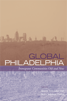

<body bgcolor="#FFFFFF" text="#000000" link="#0000FF" vlink="#CC0000" alink="#CC0000"><center><hr width="350" size="1" align="center" noshade>A comprehensive analysis of the processes and consequences of immigration to Philadelphia over time<hr width="350" size="1" align="center" noshade><p><a href="https://cdcshoppingcart.uchicago.edu/Cart/ChicagoBook.aspx?ISBN=9781439900123&&PRESS=temple" target="_top">Buy this book!</a> | <a href="https://cdcshoppingcart.uchicago.edu/Cart/Cart.aspx?PRESS=temple" target="_top">View Cart</a> | <a href="https://cdcshoppingcart.uchicago.edu/Cart/Cart.aspx?PRESS=temple" target="_top">Check Out</a></p><p></p></center><!--none//--><h1>Global Philadelphia</h1>
<H2>Immigrant Communities Old and New</H2>
<h3>edited by Ayumi Takenaka and Mary Johnson Osirim</h3>
<P>cloth 1-4399-0012-4 $85.50, Mar 10, <FONT COLOR=#990033>Available</FONT>
<br>paper 1-4399-0013-2 $33.95, Mar 10, <FONT COLOR=#990033>Available</FONT>
<br>Electronic Book 1-4399-0014-0 $33.95 <FONT COLOR=#990033>Available</FONT>
<BR> 320 pp
6x9
5&nbsp;tables 3&nbsp;map(s) 10&nbsp;figures 4&nbsp;halftones
</P><p>The racial and ethnic composition of Philadelphia continues to diversify as a new wave of immigrants&mdash;largely from Asia and Latin America&mdash;reshape the city’s demographic landscape. Moreover, in a globalized economy, immigration is the key to a city’s survival and competitiveness. The contributors to <em>Global Philadelphia</em> examine how Philadelphia has affected its immigrants’ lives, and how these immigrants, in turn, have shaped Philadelphia.
</p><p>
Providing a detailed historical, ethnographic, and sociological look at Philadelphia’s immigrant communities, this volume examines the social and economic dynamics of various ethnic populations. Significantly, the contributors make comparisons to and connections between the traditional immigrant groups&mdash;Germans, Italians, the Irish, Jews, Puerto Ricans, and Chinese&mdash;and newer arrivals, such as Cambodians, Haitians, Indians, Mexicans, and African immigrants of various nationalities.
</p><p>
While their experiences vary, <em>Global Philadelphia</em> focuses on some of the critical features that face all immigrant groups&mdash;intra-group diversity, the role of institutions, and ties to the homeland. Taken together, these essays provide a richer understanding of the processes and implications of contemporary immigration to the area.
</p><p>
Contributors include: Jennifer Atlas, Rasika Chakravarthy, Keo Chea-Young, Noel J.J. Farley, Philip L. Kilbride, Garvey F. Lundy, Ajay Nair, Rakhmiel Peltz, Birte Pfleger, Joan Saverino, Ellen Skilton-Sylvester, Lena Sze, Victor Vasquez-Hernandez, and the editors.
</p>
<BR>&nbsp;<h2>Excerpt</h2><P>Excerpt available at <a href="http://www.temple.edu/tempress">www.temple.edu/tempress</a></p>
<BR>&nbsp;<h2>Reviews</h2>
<p><i>"The articles are well done...[T]he diverse academic specialties of the authors and editors...inform the content of the articles.... [W]ell researched and worth reading. Summing Up: Recommended."</i><br>&#151<b><i>CHOICE</b></i>
<p><i>"One highlight of the volume is the new and nuanced look at populations long associated with Philadelphia.... Perhaps the most important contribution of </i>Global Philadelphia<i> is to map more recent--and still largely unstudied--immigrant flows." </i><br>&#151 <b><i>Pennsylvania Magazine of History and Biography</b></i>
<p><i>"[A]s a book about how changing patterns of international migration have impacted one city and informed the local ethnic composition of the city’s mosaic of old and new immigrant communities, it is a worthwhile collection of historical, sociological, and ethnographic vignettes....</i>Global Philadelphia<i> offers a very effective set of case studies, allowing students to explore different issues of ethnicity and urbanization."</i><br>&#151<b><i>Contemporary Sociology</b></i>
<p><i>"</i>Global Philadelphia<i> covers an impressive number of ethnic communities, giving it a breadth that often only compilation scholarship can offer.... This book convincingly exhibits the past and present contributions of various immigrant groups to Philadelphia and is replete with information and analysis that refutes the notion that immigration restriction is good policy today. Furthermore, </i>Global Philadelphia<i> subtly challenges the Ellis Island Model, quietly contributing to the new mainstream understanding that New York is overemphasized in the narrative of the immigrant experience in America. Also, the essayists not only show us that peoples from all over the world have been actively participating in the collective formation of Philadelphia specifically, but through extension remind us that immigration has played a central role in the development of the United States more generally. Finally, </i>Global Philadelphia<i> informs us that the formation of scholarly communities may be the best way to understand immigrant communities."</i> <br>&#151<b><i>Urban History</b></i>
<BR>&nbsp;<h2>Contents</h2><P>
<p>Acknowledgments
<br>1. Philadelphia’s Immigrant Communities in
Historical Perspective &#150; Ayumi Takenaka and Mary Johnson Osirim
<p><b>Part I. Community Formation and Intra- (and Inter-) Ethnic Relations</b>
<br>2. 125 Years of Building Jewish Immigrant Communities in Philadelphia &#150; Rakhmiel Peltz
<br>3. Mapping Memories in Stone: Italians and the Transformation of a Philadelphia Landscape &#150; Joan Saverino
<br>4. Pan-Latino Enclaves in Philadelphia and the Formation of the Puerto Rican Community &#150; Victor Vazquez-Hernandez
<br>5. Opportunity, Conflict, and Communities in Transition: Historical and Contemporary Chinese Immigration to Philadelphia &#150; Lena Sze
<p><b>Part II. The Role of Institutions</b>
<br>6. German Immigration to Philadelphia from the Colonial Period through the Twentieth Century &#150; Birte Pfleger
<br>7. Changes in the Behavior of Immigrants: The Irish in Philadelphia &#150; Noel J. J. Farley and Philip L. Kilbride
<br>8. Healthcare Access for Mexican Immigrants in South Philadelphia &#150; Jennifer Atlas
<p><b>Part III. Identity Formation in a Transnational Context</b>
<br>9. Philadelphia’s Haitian Community: Transnationalism and Unity in the Formation of Identity &#150; Garvey F. Lundy
<br>10. The New African Diaspora: Transnationalism and Transformation in Philadelphia &#150; Mary Johnson Osirim
<br>11. From Kerala to Philadelphia: The Experiences of Malayalee, Hindu Nurses in Philadelphia &#150; Rasika Chakravarthy and Ajay Nair
<br>12. The Other Asians in the Other Philadelphia: Understanding Cambodian Experiences in Neighborhoods, Classrooms,
and Workplaces &#150; Ellen Skilton-Sylvester and Keo Chea-Young
<p>Contributors
<br>Index
</P><BR>&nbsp;<H2>About the Author(s)</H2>
<P><b>Ayumi Takenaka</b> is Associate Professor of Sociology at Bryn Mawr College.</P>
<P><b>Mary Johnson Osirim</b> is Professor and Chair of the Department of Sociology and Faculty Diversity Liaison at Bryn Mawr College.</P>
<BR><H2>Subject Categories</H2>
<p><A HREF="/tempress/philly.html" TARGET="_top">Philadelphia Region</a>
<BR><A HREF="/tempress/urban.html" TARGET="_top">Urban Studies</a>
<BR><A HREF="/tempress/race.html" TARGET="_top">Race and Ethnicity</a>
</p>
<BR><h2 class="inpageheading">In the series</H2>
<P><I><a href="http://www.temple.edu/tempress/pvpv.html" onMouseOver="window.status='Click for other books in this series!'; return true;" onMouseOut="window.status=''; return true;" target="_top">Philadelphia Voices, Philadelphia Visions</a></i>, edited by David W. Bartelt.
</p><p>Philadelphia has always been a city that has embraced a richness of voice and vision, defying attempts to define it in a one-dimensional frame. Books in this series, <i>Philadelphia Voices, Philadelphia Visions</i>, edited by David W. Bartelt, will give voice to the diverse communities and perspectives that help define the city, and to address public issues that the city's community, civic and academic leadership raise in the public arena. The series is interdisciplinary, encompassing discussions of social divisions, cultural heterogeneity, and the importance of popular culture as expressions of communities that critique, celebrate, and continually reconstitute the Philadelphia region.</p>
<p align="center"><a href="https://cdcshoppingcart.uchicago.edu/Cart/ChicagoBook.aspx?ISBN=9781439900123&&PRESS=temple" target="_top">Buy this book!</a> | <a href="https://cdcshoppingcart.uchicago.edu/Cart/Cart.aspx?PRESS=temple" target="_top">View Cart</a> | <a href="https://cdcshoppingcart.uchicago.edu/Cart/Cart.aspx?PRESS=temple" target="_top">Check Out</a></p><p><font face="Arial" size="1"><a href="copyright.html" onMouseOver="window.status='Web Copyright Policy';return true;" onMouseOut="window.status=''" title="Web Copyright Policy">&copy;</a> 2015 <a href="http://www.temple.edu" target="new" onMouseOver="window.status='Link to Temple University home page';return true;" onMouseOut="window.status=''" title="Link to Temple University home page">Temple University</a>. All Rights Reserved. http://www.temple.edu/tempress/titles/2029_reg.html</font></p>